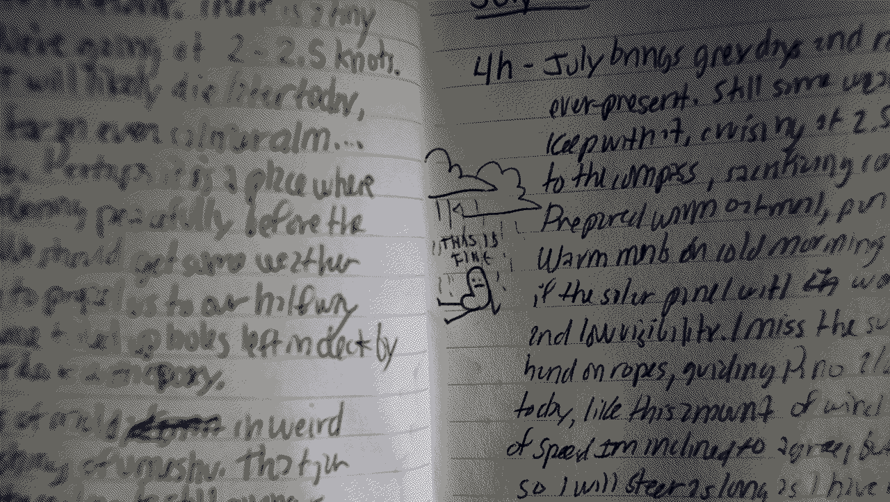

busy doing nothing
Busy Doing Nothing is the revised and improved North Pacific Logbook. It is 218 pages long, written in English. The book has 51 new drawings, 16 new sections on a variety of topics and 19 recipes.
Paperback release

Busy Doing Nothing is a 218 page long paperback book, written in English. It is in black and white, and measures 5.83 x 8.27 in / 148 x 210 mm. The book has a matte cover, and is sold for $12.48 USD | €11.29 | $17.84 AUD | £9.45 | $17.90 CAD.
Buy the book
The book is printed on demand. Lulu.com works with printers all over the world, so that most copies are produced locally and travel relatively short distances. It can take 3 to 5 work days to print the book. Since the books are printed, packaged, and shipped by humans, mistakes may happen. If your book arrives in less-than-perfect condition, contact Lulu.com with images of shipping damage or printing errors, and they will send you another copy.
E-book release

The e-book version of Busy Doing Nothing is formatted for most e-readers (EPUB, mobi and PDF).
production
In 2020, we completed our circumnavigation of the Pacific ocean. The last passage from japan (Shimoda) to Canada (Victoria) took 51 days, and it was the hardest thing we've ever done. We decided to keep a physical logbook of daily happenings onboard.
Upon our arrival, we transcribed the handwritten pages, so we could publish them online.
In fall 2020, we decided to expand on it, and to release it as a digital book. We revised most of the text, added new art and expanded on specific logs.
The book was written in Markdown and formatted to PDF and EPUB using LaTeX and CSS via Pandoc. The first edition of Busy Doing Nothing was released on February 17th 2021. The book is open source, but buying it is a way of supporting our work. The north pacific logbook is still online, but does not include new content.
In December 2021, we finally formatted and released a paperback version of the book. We settled on using Lulu.com, since they provide a very good print-on-demand service and that we can't physically keep many copies of physical books on the boat due to space (and moisture) constraints.
download
screenshots